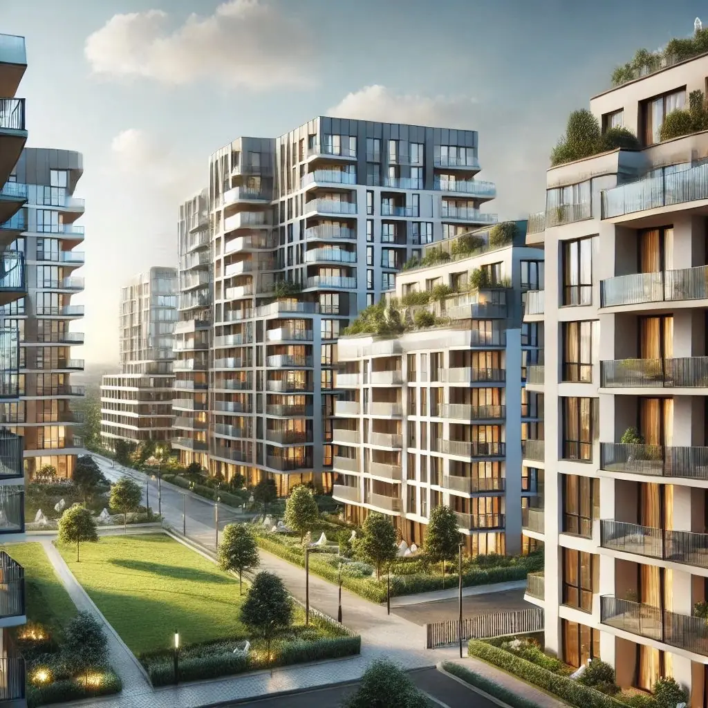
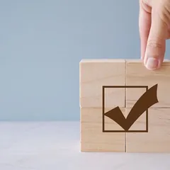

Un métier réglementé
Un cadre légal précis, propre à chaque Région, qui garantit la valeur et la fiabilité du certificat délivré.
Registre des formationsRéf. WSY-PEBWallonie · Bruxelles
Formation professionnelle · PEB · 2026
En Wallonie ou à Bruxelles.
Une formation réglementaire et pratique pour préparer votre agrément de certificateur PEB. Les procédures wallonne et bruxelloise sont différentes : choisissez votre Région pour voir le parcours qui vous concerne.
Autorité compétente pour la Région choisie : Bruxelles Environnement·parcours détaillé ci-dessous
Formation en présentiel · Encadrement professionnel · Programme conforme aux exigences régionales

01Le métier
Le certificateur PEB évalue la performance énergétique d'un bâtiment et établit le certificat qui l'atteste. Une compétence de plus en plus demandée, dans un secteur de la construction en pleine transition énergétique.
Un cadre légal précis, propre à chaque Région, qui garantit la valeur et la fiabilité du certificat délivré.
Chaque vente, location ou rénovation de bâtiment s'appuie sur le certificat PEB : une compétence utile dans la durée.
Exercée à titre indépendant ou en complément d'une activité d'architecte, d'ingénieur ou de professionnel de la construction.
02Parcours
Les procédures sont régionales : choisissez la Région dans laquelle vous souhaitez exercer. Le sélecteur ci-dessus (ou ci-dessous) met à jour les étapes.
Formation reconnue par Bruxelles Environnement. L'attestation obtenue permet de s'inscrire à 2 séances d'examen maximum.
Épreuve théorique et épreuve pratique, organisées par Bruxelles Environnement via sa plateforme officielle.
Dossier déposé auprès de Bruxelles Environnement : attestation de réussite (< 6 mois), preuve du droit de dossier (50 €), diplôme ou preuve d'expérience, extrait de casier judiciaire.
Délivré par Bruxelles Environnement : il permet d'exercer comme certificateur PEB à Bruxelles.
Inscription au registre public bruxellois, condition pour exercer.
Diplôme admissible ou expérience professionnelle d'au moins 2 ans concernant les aspects énergétiques des bâtiments.
Formulaire officiel envoyé par courrier ou e-mail ; un accusé de réception est délivré sous 10 jours.
L'administration autorise le candidat à s'inscrire auprès d'un centre de formation agréé.
Formation dispensée par le centre agréé, conforme au programme fixé par le SPW Énergie.
Les deux épreuves sont organisées par le centre agréé, selon le calendrier de la session suivie.
Le centre transmet le rapport de session à l'administration ; l'agrément est délivré par le Ministre dans les 40 jours qui suivent.
03Programme
Un socle commun de connaissances techniques du bâtiment, complété d'une mise en pratique et d'une préparation ciblée à l'épreuve de la Région choisie. Formation en présentiel, orientée terrain : relevés, cas concrets, retours du formateur.
Principes de la performance énergétique des bâtiments et rôle du certificateur.
Lecture des plans, composition des parois et ponts thermiques.
Matériaux isolants, résistances thermiques et méthodes d'évaluation.
Systèmes de production et de distribution de chaleur.
Systèmes de ventilation et leur incidence sur la performance énergétique.
Installations solaires, pompes à chaleur et autres sources renouvelables.
Méthode de relevé sur place, mesures et photos requises.
Méthode d'encodage utilisée pour produire le certificat, selon la Région (dont le logiciel Certibru-RES à Bruxelles).
Mise en situation sur un dossier complet, du relevé au certificat.
Révision ciblée et mise en conditions avant l'examen régional.
04Conditions d'accès
Diplôme en architecture, ingénierie ou construction (belge ou équivalent étranger).
À défaut de diplôme admissible : au moins 2 ans d'expérience professionnelle liée aux aspects énergétiques des bâtiments.
Attestation de réussite de l'examen centralisé, datant de moins de 6 mois au moment du dépôt du dossier d'agrément.
Diplôme d'architecte, d'ingénieur architecte, d'ingénieur civil, de bio-ingénieur, d'ingénieur industriel, de gradué/bachelier en construction, ou tout autre diplôme de l'enseignement supérieur couvrant les aspects énergétiques des bâtiments.
À défaut de diplôme admissible : justifier d'au moins 2 ans d'expérience professionnelle concernant les aspects énergétiques des bâtiments.
Ne pas avoir eu d'agrément retiré depuis moins de 3 ans.
Vous n'êtes pas certain de remplir les conditions ? Le vérificateur ci-dessous donne une première indication, en quelques minutes.
Vérifier mon éligibilité05Éligibilité

Quatre étapes, deux minutes. Un premier repère avant de nous contacter — jamais une décision administrative.
Vérification indicative : l'éligibilité définitive relève de l'autorité régionale compétente.
06Examen
Épreuve théorique (20 questions à choix multiple) et épreuve pratique (encodage d'un cas avec le logiciel Certibru-RES) — 4 heures maximum
Organisé directement par Bruxelles Environnement, via sa plateforme officielle. Le règlement en vigueur (depuis le 27/01/2026) est à vérifier avant chaque session sur examen.environnement.brussels . Des frais de participation à l'examen lui-même sont susceptibles de s'appliquer : à confirmer directement auprès de Bruxelles Environnement (distincts du droit de dossier de l'agrément, voir la section Tarifs).
Épreuve écrite, puis épreuve orale
Les deux épreuves sont organisées par le centre de formation agréé, selon le calendrier publié pour la session suivie.
07Sessions
Aucune session Wisy Safety n'est encore programmée pour cette formation. Laissez-nous vos coordonnées pour être informé dès l'ouverture.
Les prochaines dates seront publiées prochainement.
Être informé de la prochaine session08Tarifs
Le tarif Wisy Safety est communiqué sur demande pour la prochaine session. Les frais administratifs éventuels (droit de dossier, examen) sont fixés par l'autorité compétente et toujours distincts du prix de la formation.
Tarif sur demande
Contactez-nous pour le tarif de la prochaine session.
Repères du marché (non Wisy Safety)
Tarif sur demande
Contactez-nous pour le tarif de la prochaine session.
Repères du marché (non Wisy Safety)
09Comparaison
Les procédures sont régionales : choisissez la Région dans laquelle vous souhaitez exercer. Un agrément obtenu dans une Région ne permet pas d'exercer dans l'autre.
| Critère | Wallonie | Bruxelles |
|---|---|---|
| Autorité compétente | SPW Énergie (agrément délivré par le Ministre wallon de l'Énergie) | Bruxelles Environnement |
| Champ | Bâtiment résidentiel existant | Habitations individuelles |
| Formation | Dispensée par un centre agréé, après autorisation du SPW Énergie | Dispensée par un centre reconnu par Bruxelles Environnement |
| Examen | Épreuve écrite, puis épreuve orale | Épreuve théorique (QCM) et épreuve pratique (logiciel Certibru-RES) |
| Demande d'agrément | Introduite avant la formation, auprès du SPW Énergie | Introduite après l'examen, auprès de Bruxelles Environnement |
| Droit de dossier | Aucun communiqué à ce jour | 50 € (demande d'agrément résidentiel) |
| Logiciel / méthode | Méthode wallonne de calcul PEB | Certibru-RES |
| Registre | Registre wallon des certificateurs agréés | Registre bruxellois des certificateurs agréés |
Les procédures sont régionales : choisissez la Région dans laquelle vous souhaitez exercer. La Wallonie et Bruxelles appliquent chacune leur propre législation, leur propre autorité, leur propre examen et leur propre registre — un agrément obtenu dans une Région ne permet pas d'exercer dans l'autre.
Formation actuellement indisponible. Bruxelles Environnement indique : « Pour le moment, aucun centre de formation ne donne cette formation. » Bruxelles Environnement travaille à une évolution de la législation et des outils concernant la certification PEB des unités PEB tertiaires ; les centres de formation devraient recommencer à la dispenser une fois cette évolution finalisée.
L'agrément « bâtiment public » est distinct de l'agrément résidentiel présenté sur cette page, en Wallonie comme à Bruxelles : formation et procédure propres. Non détaillé ici tant que l'offre Wisy Safety pour cet agrément n'est pas confirmée — contactez-nous pour en savoir plus.
10Wisy Safety
Une formation structurée autour des exigences régionales et de la pratique terrain — sans surpromesse sur ce qui relève de l'autorité compétente.
Une équipe habituée au terrain de la construction et de la sécurité, qui structure les connaissances techniques de façon claire.
Un contenu qui respecte les spécificités de chaque Région, plutôt qu'un programme générique appliqué aux deux.
Un centre de formation établi à Bruxelles, accessible depuis la Wallonie comme depuis Bruxelles.
Cas pratiques et mises en situation, pour transformer les connaissances techniques en réflexes de terrain.
11FAQ
Une autre question ? Consultez le centre d'aide ou contactez-nous.
WallonieVérifier les conditions d'accès, introduire une demande d'agrément auprès du SPW Énergie, suivre la formation auprès d'un centre agréé, réussir l'épreuve écrite puis l'épreuve orale, puis obtenir l'agrément délivré par le Ministre.
BruxellesSuivre une formation reconnue par Bruxelles Environnement, réussir l'examen centralisé (théorique et pratique), puis introduire la demande d'agrément auprès de Bruxelles Environnement.
Une formation réglementaire dispensée par un centre agréé, préparant aux épreuves écrite et orale du parcours wallon — accessible après l'introduction d'une demande d'agrément auprès du SPW Énergie.
Une formation reconnue par Bruxelles Environnement, préparant à l'examen centralisé (théorique et pratique, avec le logiciel Certibru-RES) organisé par cette même autorité.
Elles dépendent de la Région choisie : un diplôme admissible (architecture, ingénierie, construction ou énergie du bâtiment) ou, à défaut, au moins 2 ans d'expérience professionnelle liée aux aspects énergétiques des bâtiments. Voir la section « Conditions d'accès » ci-dessus selon la Région.
Oui, dans les deux Régions : à défaut d'un diplôme admissible, au moins 2 ans d'expérience professionnelle concernant les aspects énergétiques des bâtiments peuvent remplacer le diplôme, selon les conditions administratives propres à chaque autorité.
Non. La Wallonie et Bruxelles appliquent chacune leur propre législation, leur propre autorité (SPW Énergie / Bruxelles Environnement), leur propre examen et leur propre registre de certificateurs. Un agrément obtenu dans une Région ne permet pas d'exercer dans l'autre.
Le parcours wallon prévoit une épreuve écrite, puis une épreuve orale, organisées par le centre de formation agréé selon le calendrier de la session suivie.
Il comprend une épreuve théorique (20 questions à choix multiple) et une épreuve pratique (encodage d'un cas avec le logiciel Certibru-RES), sur 4 heures maximum, organisé directement par Bruxelles Environnement. Le règlement en vigueur est à vérifier sur la plateforme officielle avant chaque session.
Le tarif de la formation Wisy Safety est communiqué sur demande pour la prochaine session, dans la Région choisie. Des ordres de grandeur observés chez d'autres organismes sont indiqués à titre de repère dans la section Tarifs, mais ne reflètent pas le tarif Wisy Safety.
Un droit de dossier de 50 € s'applique actuellement à la demande d'agrément résidentiel, selon les informations publiées par Bruxelles Environnement. Ce montant est fixé par l'autorité compétente et peut évoluer — ce n'est pas le prix de la formation.
La durée totale dépend de la Région, du centre de formation et des délais propres à chaque autorité (inscription, session, résultats, traitement de la demande d'agrément) : elle n'est pas communiquée ici pour éviter toute estimation non confirmée. Contactez-nous pour un point sur les délais actuels.
Seulement en obtenant les deux agréments séparément : un parcours complet (formation, examen, agrément) dans chaque Région où vous souhaitez exercer.
Prêt à démarrer
Formation réglementaire et pratique, en Wallonie ou à Bruxelles. Sessions communiquées sur demande.
12Sources réglementaires
Informations réglementaires vérifiées le 24 septembre 2026, sur les sources officielles ci-dessus. En cas de doute, la source officielle de la Région concernée fait toujours foi.